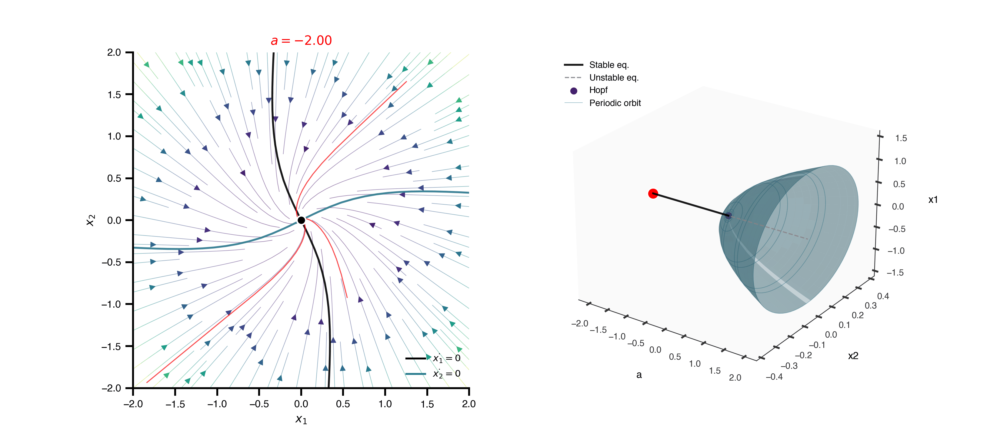

from IPython.display import Markdownfrom tvbo import Dynamics, Continuation, SimulationExperimentimport matplotlib.pyplot as pltimport numpy as np= r""" name: HopfNF description: | Supercritical Hopf normal form ( Cartesian ) . For $ a < 0 $ the origin is a stable focus; at $ a = 0 $ a Hopf bifurcation gives birth to a stable limit cycle of radius $\s qrt a $ and angular frequency $ w $. The legacy figures `HopfPhasePortrait_and_BifDiag3D_a={-2,-1,-0 . 15,0 . 5,1,1 . 5} . png` show, for each $ a $ , the 2D phase portrait alongside the 3D bifurcation diagram with the periodic-orbit tube . parameters: a: { name: a, value: 0 . 5 } w: { name: w, value: 1 . 0 } state_variables: x1: name: x1 domain: { lo: -2 . 0, hi: 2 . 0 } equation: lhs: Derivative ( x1, t ) rhs: ( a - x1 ** 2 - x2 ** 2 ) * x1 - w * x2 initial_value: 0 . 0 x2: name: x2 domain: { lo: -2 . 0, hi: 2 . 0 } equation: lhs: Derivative ( x2, t ) rhs: ( a - x1 ** 2 - x2 ** 2 ) * x2 + w * x1 initial_value: 0 . 0 """ = Dynamics.from_string(HOPF_YAML)'markdown' ))
HopfNF
Supercritical Hopf normal form (Cartesian). For \(a < 0\) the origin is a stable focus; at \(a = 0\) a Hopf bifurcation gives birth to a stable limit cycle of radius \(\sqrt a\) and angular frequency \(w\) . The legacy figures HopfPhasePortrait_and_BifDiag3D_a={-2,-1,-0.15,0.5,1,1.5}.png show, for each \(a\) , the 2D phase portrait alongside the 3D bifurcation diagram with the periodic-orbit tube.
autonomous: True; modes: 1; state variables: 2; parameters: 2.
State Equations
\[
\dot{x_{1}} = x_{1}*\left(a - x_{1}^{2} - x_{2}^{2}\right) - w*x_{2}
\] \[
\dot{x_{2}} = w*x_{1} + x_{2}*\left(a - x_{1}^{2} - x_{2}^{2}\right)
\]
State Variables
\(x_{1}\) 0
differential (order 1)
[-2, 2]
recorded
\(x_{2}\) 0
differential (order 1)
[-2, 2]
recorded
Parameters
Phase portraits across \(a\) — animation
The legacy figure series HopfPhasePortrait_and_BifDiag3D_a=*.png shows six static panels for fixed values of \(a\) . Below we use BifurcationResult.animate(...) further down to generate a single animation that captures the whole transition from stable focus to limit cycle alongside the 3D bifurcation diagram. First, the static reference grid:
Bifurcation diagram with limit-cycle continuation
A single 1-parameter sweep in \(a\) for the equilibrium branch, plus a nested branch that picks up periodic orbits from each detected Hopf point:
= Dynamics.from_string(HOPF_YAML)= """ name: hopf_in_a dynamics: HopfNF free_parameters: - name: a domain: { lo: -2.0, hi: 2.0 } max_steps: 400 ds: 0.01 bothside: true branches: - name: po_from_hopf source_point: "hopf:all" bothside: true """ = Continuation.from_string(CONT_YAML)= SimulationExperiment(dynamics= dyn, continuations= [cont])= exp.run("bifurcationkit.jl" )= result.continuations["hopf_in_a" ]= "x1" )
Detected IPython. Loading juliacall extension. See https://juliapy.github.io/PythonCall.jl/stable/compat/#IPython
CT: 1.063861 seconds (2.60 M allocations: 129.708 MiB, 4.02% gc time, 99.93% compilation time)
CT: 0.000237 seconds (2.14 k allocations: 191.859 KiB)
CT: 5.140689 seconds (3.97 M allocations: 555.047 MiB, 7.41% gc time, 83.07% compilation time)
CT: 0.267288 seconds (226.88 k allocations: 390.487 MiB, 5.74% gc time)
3D bifurcation diagram
The full picture: equilibrium spine (with stability colouring), Hopf point, and the limit-cycle tube whose radius grows like \(\sqrt a\) :
Combined sweep: phase portrait + 3D diagram
BifurcationResult.animate(...) ties the two views together. The left panel re-renders the phase portrait at the current value of \(a\) ; the right panel shows the 3D diagram once with a moving red marker that tracks the position on the equilibrium backbone.
= hopf.animate(dyn, "a" , np.linspace(- 2.0 , 1.5 , 24 ),"x1" , "x2" , VOI= "x1" ,= 18 , n_trajectories= 3 , duration= 15 ,= (11 , 4.8 ),= r" $ a = {value: + . 2f} $ " )"hopf_sweep.gif" , writer= "pillow" , fps= 8 )

AUTO-07p (NumCont)
Mirrors the standalone PhasePortraitHopf.py example: AUTO-07p time-integrates from the YAML defaults to a stable focus (or limit cycle), sweeps \(a\) in both directions, and – when the equilibrium branch yields a Hopf label – continues the periodic orbit out via the nested branch declared above as source_point: "hopf:all".
= exp.run("auto-07p" )= result_auto.continuations["hopf_in_a" ]= "x1" )
/opt/homebrew/bin/gfortran -arch arm64 -O -fopenmp -O -c /var/folders/ym/9kw1g21j1nd7kwfn8c0z3st40000gn/T/tvbo_numcont_HopfNF_nxadhqn6/model.f90 -o /var/folders/ym/9kw1g21j1nd7kwfn8c0z3st40000gn/T/tvbo_numcont_HopfNF_nxadhqn6/model.o
/opt/homebrew/bin/gfortran -arch arm64 -O -fopenmp -O /var/folders/ym/9kw1g21j1nd7kwfn8c0z3st40000gn/T/tvbo_numcont_HopfNF_nxadhqn6/model.o -o /var/folders/ym/9kw1g21j1nd7kwfn8c0z3st40000gn/T/tvbo_numcont_HopfNF_nxadhqn6/model.exe /Applications/auto-07p/lib/*.o
Starting /var/folders/ym/9kw1g21j1nd7kwfn8c0z3st40000gn/T/tvbo_numcont_HopfNF_nxadhqn6/model ...
ld: warning: duplicate -rpath '/Library/Developer/CommandLineTools/SDKs/MacOSX26.4.sdk/usr/lib' ignored
BR PT TY LAB a L2-NORM x1 x2
1 1 EP 1 5.00000E-01 0.00000E+00 0.00000E+00 0.00000E+00
1 10 2 1.06000E+00 0.00000E+00 0.00000E+00 0.00000E+00
1 20 EP 3 2.06000E+00 0.00000E+00 0.00000E+00 0.00000E+00
Total Time 0.895E-02
/var/folders/ym/9kw1g21j1nd7kwfn8c0z3st40000gn/T/tvbo_numcont_HopfNF_nxadhqn6/model ... done
Starting /var/folders/ym/9kw1g21j1nd7kwfn8c0z3st40000gn/T/tvbo_numcont_HopfNF_nxadhqn6/model ...
BR PT TY LAB a L2-NORM x1 x2
1 1 EP 1 5.00000E-01 0.00000E+00 0.00000E+00 0.00000E+00
1 10 HB 2 6.00002E-09 0.00000E+00 0.00000E+00 0.00000E+00
1 20 3 -1.00000E+00 0.00000E+00 0.00000E+00 0.00000E+00
1 30 EP 4 -2.00000E+00 0.00000E+00 0.00000E+00 0.00000E+00
Total Time 0.126E-02
/var/folders/ym/9kw1g21j1nd7kwfn8c0z3st40000gn/T/tvbo_numcont_HopfNF_nxadhqn6/model ... done
Merge done
Saving to hopf_in_a, hopf_in_a, and hopf_in_a ... done
Starting /var/folders/ym/9kw1g21j1nd7kwfn8c0z3st40000gn/T/tvbo_numcont_HopfNF_nxadhqn6/model ...
BR PT TY LAB a L2-NORM MAX x1 MAX x2 PERIOD
3 1 7 6.00002E-09 0.00000E+00 0.00000E+00 0.00000E+00 6.28319E+00
3 2 8 1.00000E-04 1.00000E-02 1.00000E-02 1.00000E-02 6.28319E+00
3 3 9 3.99900E-04 1.99975E-02 1.99951E-02 1.99951E-02 6.28319E+00
3 4 10 8.99222E-04 2.99870E-02 2.99828E-02 2.99828E-02 6.28319E+00
3 5 11 1.59717E-03 3.99646E-02 3.99590E-02 3.99590E-02 6.28319E+00
3 6 12 2.49265E-03 4.99264E-02 4.99193E-02 4.99193E-02 6.28319E+00
3 7 13 3.58425E-03 5.98686E-02 5.98601E-02 5.98601E-02 6.28319E+00
3 8 14 4.87030E-03 6.97875E-02 6.97776E-02 6.97776E-02 6.28319E+00
3 9 15 6.34883E-03 7.96795E-02 7.96682E-02 7.96682E-02 6.28319E+00
3 10 16 8.01762E-03 8.95412E-02 8.95285E-02 8.95285E-02 6.28319E+00
3 11 17 9.87423E-03 9.93692E-02 9.93551E-02 9.93551E-02 6.28319E+00
3 12 18 1.19160E-02 1.09160E-01 1.09145E-01 1.09145E-01 6.28319E+00
3 13 19 1.41400E-02 1.18912E-01 1.18895E-01 1.18895E-01 6.28319E+00
3 14 20 1.65432E-02 1.28620E-01 1.28602E-01 1.28602E-01 6.28319E+00
3 15 21 1.91224E-02 1.38284E-01 1.38264E-01 1.38264E-01 6.28319E+00
3 16 22 2.18742E-02 1.47899E-01 1.47878E-01 1.47878E-01 6.28319E+00
3 17 23 2.47952E-02 1.57465E-01 1.57442E-01 1.57442E-01 6.28319E+00
3 18 24 2.78817E-02 1.66978E-01 1.66954E-01 1.66954E-01 6.28319E+00
3 19 25 3.11301E-02 1.76437E-01 1.76412E-01 1.76412E-01 6.28319E+00
3 20 26 3.45368E-02 1.85841E-01 1.85814E-01 1.85814E-01 6.28319E+00
3 21 27 3.80978E-02 1.95187E-01 1.95159E-01 1.95159E-01 6.28319E+00
3 22 28 4.18095E-02 2.04474E-01 2.04445E-01 2.04445E-01 6.28319E+00
3 23 29 4.56680E-02 2.13701E-01 2.13670E-01 2.13670E-01 6.28319E+00
3 24 30 4.96695E-02 2.22867E-01 2.22835E-01 2.22835E-01 6.28319E+00
3 25 31 5.38102E-02 2.31970E-01 2.31937E-01 2.31937E-01 6.28319E+00
3 26 32 5.80863E-02 2.41011E-01 2.40977E-01 2.40977E-01 6.28319E+00
3 27 33 6.24942E-02 2.49988E-01 2.49953E-01 2.49953E-01 6.28319E+00
3 28 34 6.70301E-02 2.58902E-01 2.58865E-01 2.58865E-01 6.28319E+00
3 29 35 7.16903E-02 2.67750E-01 2.67713E-01 2.67713E-01 6.28319E+00
3 30 36 7.64714E-02 2.76535E-01 2.76495E-01 2.76495E-01 6.28319E+00
3 31 37 8.13697E-02 2.85254E-01 2.85213E-01 2.85213E-01 6.28319E+00
3 32 38 8.63819E-02 2.93908E-01 2.93866E-01 2.93866E-01 6.28319E+00
3 33 39 9.15046E-02 3.02497E-01 3.02454E-01 3.02454E-01 6.28319E+00
3 34 40 9.67344E-02 3.11022E-01 3.10977E-01 3.10977E-01 6.28319E+00
3 35 41 1.02068E-01 3.19481E-01 3.19436E-01 3.19436E-01 6.28319E+00
3 36 42 1.07503E-01 3.27876E-01 3.27830E-01 3.27830E-01 6.28319E+00
3 37 43 1.13035E-01 3.36207E-01 3.36160E-01 3.36160E-01 6.28319E+00
3 38 44 1.18663E-01 3.44475E-01 3.44426E-01 3.44426E-01 6.28319E+00
3 39 45 1.24382E-01 3.52678E-01 3.52628E-01 3.52628E-01 6.28319E+00
3 40 46 1.30190E-01 3.60819E-01 3.60768E-01 3.60768E-01 6.28319E+00
3 41 47 1.36085E-01 3.68898E-01 3.68845E-01 3.68845E-01 6.28319E+00
3 42 48 1.42064E-01 3.76914E-01 3.76861E-01 3.76861E-01 6.28319E+00
3 43 49 1.48124E-01 3.84869E-01 3.84815E-01 3.84815E-01 6.28319E+00
3 44 50 1.54263E-01 3.92764E-01 3.92708E-01 3.92708E-01 6.28319E+00
3 45 51 1.60479E-01 4.00598E-01 4.00541E-01 4.00541E-01 6.28319E+00
3 46 52 1.66769E-01 4.08373E-01 4.08315E-01 4.08315E-01 6.28319E+00
3 47 53 1.73130E-01 4.16089E-01 4.16030E-01 4.16030E-01 6.28319E+00
3 48 54 1.79562E-01 4.23747E-01 4.23687E-01 4.23687E-01 6.28319E+00
3 49 55 1.86061E-01 4.31348E-01 4.31286E-01 4.31286E-01 6.28319E+00
3 50 56 1.92626E-01 4.38891E-01 4.38829E-01 4.38829E-01 6.28319E+00
3 51 57 1.99254E-01 4.46379E-01 4.46316E-01 4.46316E-01 6.28319E+00
3 52 58 2.05945E-01 4.53812E-01 4.53747E-01 4.53747E-01 6.28319E+00
3 53 59 2.12696E-01 4.61190E-01 4.61124E-01 4.61124E-01 6.28319E+00
3 54 60 2.19505E-01 4.68514E-01 4.68447E-01 4.68447E-01 6.28319E+00
3 55 61 2.26371E-01 4.75785E-01 4.75717E-01 4.75717E-01 6.28319E+00
3 56 62 2.33292E-01 4.83003E-01 4.82935E-01 4.82935E-01 6.28319E+00
3 57 63 2.40266E-01 4.90170E-01 4.90100E-01 4.90100E-01 6.28319E+00
3 58 64 2.47293E-01 4.97286E-01 4.97215E-01 4.97215E-01 6.28319E+00
3 59 65 2.54370E-01 5.04351E-01 5.04279E-01 5.04279E-01 6.28319E+00
3 60 66 2.61496E-01 5.11367E-01 5.11294E-01 5.11294E-01 6.28319E+00
3 61 67 2.68670E-01 5.18334E-01 5.18260E-01 5.18260E-01 6.28319E+00
3 62 68 2.75890E-01 5.25253E-01 5.25178E-01 5.25178E-01 6.28319E+00
3 63 69 2.83156E-01 5.32124E-01 5.32049E-01 5.32049E-01 6.28319E+00
3 64 70 2.90466E-01 5.38949E-01 5.38872E-01 5.38872E-01 6.28319E+00
3 65 71 2.97818E-01 5.45727E-01 5.45650E-01 5.45650E-01 6.28319E+00
3 66 72 3.05212E-01 5.52460E-01 5.52382E-01 5.52382E-01 6.28319E+00
3 67 73 3.12647E-01 5.59148E-01 5.59069E-01 5.59069E-01 6.28319E+00
3 68 74 3.20121E-01 5.65792E-01 5.65712E-01 5.65712E-01 6.28319E+00
3 69 75 3.27633E-01 5.72392E-01 5.72311E-01 5.72311E-01 6.28319E+00
3 70 76 3.35183E-01 5.78950E-01 5.78868E-01 5.78868E-01 6.28319E+00
3 71 77 3.42770E-01 5.85465E-01 5.85382E-01 5.85382E-01 6.28319E+00
3 72 78 3.50392E-01 5.91939E-01 5.91855E-01 5.91855E-01 6.28319E+00
3 73 79 3.58048E-01 5.98371E-01 5.98287E-01 5.98287E-01 6.28319E+00
3 74 80 3.65739E-01 6.04763E-01 6.04678E-01 6.04678E-01 6.28319E+00
3 75 81 3.73462E-01 6.11116E-01 6.11029E-01 6.11029E-01 6.28319E+00
3 76 82 3.81218E-01 6.17429E-01 6.17341E-01 6.17341E-01 6.28319E+00
3 77 83 3.89005E-01 6.23703E-01 6.23614E-01 6.23614E-01 6.28319E+00
3 78 84 3.96823E-01 6.29939E-01 6.29849E-01 6.29849E-01 6.28319E+00
3 79 85 4.04670E-01 6.36137E-01 6.36047E-01 6.36047E-01 6.28319E+00
3 80 86 4.12547E-01 6.42298E-01 6.42207E-01 6.42207E-01 6.28319E+00
3 81 87 4.20452E-01 6.48423E-01 6.48331E-01 6.48331E-01 6.28319E+00
3 82 88 4.28385E-01 6.54511E-01 6.54418E-01 6.54418E-01 6.28319E+00
3 83 89 4.36345E-01 6.60564E-01 6.60471E-01 6.60471E-01 6.28319E+00
3 84 90 4.44332E-01 6.66582E-01 6.66488E-01 6.66488E-01 6.28319E+00
3 85 91 4.52344E-01 6.72565E-01 6.72470E-01 6.72470E-01 6.28319E+00
3 86 92 4.60382E-01 6.78515E-01 6.78418E-01 6.78418E-01 6.28319E+00
3 87 93 4.68445E-01 6.84430E-01 6.84333E-01 6.84333E-01 6.28319E+00
3 88 94 4.76532E-01 6.90313E-01 6.90215E-01 6.90215E-01 6.28319E+00
3 89 95 4.84642E-01 6.96163E-01 6.96064E-01 6.96064E-01 6.28319E+00
3 90 96 4.92776E-01 7.01980E-01 7.01881E-01 7.01881E-01 6.28319E+00
3 91 97 5.00933E-01 7.07766E-01 7.07666E-01 7.07666E-01 6.28319E+00
3 92 98 5.09111E-01 7.13520E-01 7.13419E-01 7.13419E-01 6.28319E+00
3 93 99 5.17311E-01 7.19244E-01 7.19142E-01 7.19142E-01 6.28319E+00
3 94 100 5.25533E-01 7.24936E-01 7.24834E-01 7.24834E-01 6.28319E+00
3 95 101 5.33775E-01 7.30599E-01 7.30496E-01 7.30496E-01 6.28319E+00
3 96 102 5.42038E-01 7.36232E-01 7.36128E-01 7.36128E-01 6.28319E+00
3 97 103 5.50320E-01 7.41836E-01 7.41731E-01 7.41731E-01 6.28319E+00
3 98 104 5.58622E-01 7.47410E-01 7.47304E-01 7.47304E-01 6.28319E+00
3 99 105 5.66944E-01 7.52957E-01 7.52850E-01 7.52850E-01 6.28319E+00
3 100 106 5.75283E-01 7.58474E-01 7.58367E-01 7.58367E-01 6.28319E+00
3 101 107 5.83642E-01 7.63964E-01 7.63856E-01 7.63856E-01 6.28319E+00
3 102 108 5.92018E-01 7.69427E-01 7.69318E-01 7.69318E-01 6.28319E+00
3 103 109 6.00412E-01 7.74862E-01 7.74753E-01 7.74753E-01 6.28319E+00
3 104 110 6.08823E-01 7.80271E-01 7.80160E-01 7.80160E-01 6.28319E+00
3 105 111 6.17251E-01 7.85653E-01 7.85542E-01 7.85542E-01 6.28319E+00
3 106 112 6.25696E-01 7.91009E-01 7.90897E-01 7.90897E-01 6.28319E+00
3 107 113 6.34157E-01 7.96340E-01 7.96227E-01 7.96227E-01 6.28319E+00
3 108 114 6.42634E-01 8.01645E-01 8.01531E-01 8.01531E-01 6.28319E+00
3 109 115 6.51127E-01 8.06924E-01 8.06810E-01 8.06810E-01 6.28319E+00
3 110 116 6.59635E-01 8.12179E-01 8.12064E-01 8.12064E-01 6.28319E+00
3 111 117 6.68158E-01 8.17409E-01 8.17293E-01 8.17293E-01 6.28319E+00
3 112 118 6.76696E-01 8.22615E-01 8.22499E-01 8.22499E-01 6.28319E+00
3 113 119 6.85249E-01 8.27797E-01 8.27680E-01 8.27680E-01 6.28319E+00
3 114 120 6.93815E-01 8.32956E-01 8.32838E-01 8.32838E-01 6.28319E+00
3 115 121 7.02396E-01 8.38091E-01 8.37972E-01 8.37972E-01 6.28319E+00
3 116 122 7.10991E-01 8.43203E-01 8.43083E-01 8.43083E-01 6.28319E+00
3 117 123 7.19599E-01 8.48292E-01 8.48172E-01 8.48172E-01 6.28319E+00
3 118 124 7.28221E-01 8.53359E-01 8.53237E-01 8.53237E-01 6.28319E+00
3 119 125 7.36855E-01 8.58403E-01 8.58281E-01 8.58281E-01 6.28319E+00
3 120 126 7.45503E-01 8.63425E-01 8.63303E-01 8.63303E-01 6.28319E+00
3 121 127 7.54163E-01 8.68425E-01 8.68302E-01 8.68302E-01 6.28319E+00
3 122 128 7.62835E-01 8.73404E-01 8.73281E-01 8.73281E-01 6.28319E+00
3 123 129 7.71520E-01 8.78362E-01 8.78237E-01 8.78237E-01 6.28319E+00
3 124 130 7.80216E-01 8.83299E-01 8.83173E-01 8.83173E-01 6.28319E+00
3 125 131 7.88925E-01 8.88214E-01 8.88088E-01 8.88088E-01 6.28319E+00
3 126 132 7.97645E-01 8.93110E-01 8.92983E-01 8.92983E-01 6.28319E+00
3 127 133 8.06376E-01 8.97984E-01 8.97857E-01 8.97857E-01 6.28319E+00
3 128 134 8.15119E-01 9.02839E-01 9.02711E-01 9.02711E-01 6.28319E+00
3 129 135 8.23872E-01 9.07674E-01 9.07545E-01 9.07545E-01 6.28319E+00
3 130 136 8.32637E-01 9.12489E-01 9.12360E-01 9.12360E-01 6.28319E+00
3 131 137 8.41412E-01 9.17285E-01 9.17155E-01 9.17155E-01 6.28319E+00
3 132 138 8.50197E-01 9.22061E-01 9.21931E-01 9.21931E-01 6.28319E+00
3 133 139 8.58993E-01 9.26819E-01 9.26687E-01 9.26687E-01 6.28319E+00
3 134 140 8.67799E-01 9.31557E-01 9.31425E-01 9.31425E-01 6.28319E+00
3 135 141 8.76615E-01 9.36277E-01 9.36144E-01 9.36144E-01 6.28319E+00
3 136 142 8.85441E-01 9.40979E-01 9.40845E-01 9.40845E-01 6.28319E+00
3 137 143 8.94277E-01 9.45662E-01 9.45528E-01 9.45528E-01 6.28319E+00
3 138 144 9.03122E-01 9.50327E-01 9.50192E-01 9.50192E-01 6.28319E+00
3 139 145 9.11976E-01 9.54975E-01 9.54839E-01 9.54839E-01 6.28319E+00
3 140 146 9.20840E-01 9.59604E-01 9.59468E-01 9.59468E-01 6.28319E+00
3 141 147 9.29713E-01 9.64216E-01 9.64080E-01 9.64080E-01 6.28319E+00
3 142 148 9.38595E-01 9.68811E-01 9.68674E-01 9.68674E-01 6.28319E+00
3 143 149 9.47486E-01 9.73389E-01 9.73251E-01 9.73251E-01 6.28319E+00
3 144 150 9.56385E-01 9.77949E-01 9.77811E-01 9.77811E-01 6.28319E+00
3 145 151 9.65293E-01 9.82493E-01 9.82354E-01 9.82354E-01 6.28319E+00
3 146 152 9.74210E-01 9.87021E-01 9.86881E-01 9.86881E-01 6.28319E+00
3 147 153 9.83135E-01 9.91531E-01 9.91391E-01 9.91391E-01 6.28319E+00
3 148 154 9.92068E-01 9.96026E-01 9.95885E-01 9.95885E-01 6.28319E+00
3 149 155 1.00101E+00 1.00050E+00 1.00036E+00 1.00036E+00 6.28319E+00
3 150 156 1.00996E+00 1.00497E+00 1.00482E+00 1.00482E+00 6.28319E+00
3 151 157 1.01892E+00 1.00941E+00 1.00927E+00 1.00927E+00 6.28319E+00
3 152 158 1.02788E+00 1.01384E+00 1.01370E+00 1.01370E+00 6.28319E+00
3 153 159 1.03685E+00 1.01826E+00 1.01812E+00 1.01812E+00 6.28319E+00
3 154 160 1.04583E+00 1.02266E+00 1.02251E+00 1.02251E+00 6.28319E+00
3 155 161 1.05482E+00 1.02704E+00 1.02690E+00 1.02690E+00 6.28319E+00
3 156 162 1.06381E+00 1.03141E+00 1.03127E+00 1.03127E+00 6.28319E+00
3 157 163 1.07282E+00 1.03577E+00 1.03562E+00 1.03562E+00 6.28319E+00
3 158 164 1.08183E+00 1.04011E+00 1.03996E+00 1.03996E+00 6.28319E+00
3 159 165 1.09084E+00 1.04443E+00 1.04429E+00 1.04429E+00 6.28319E+00
3 160 166 1.09987E+00 1.04874E+00 1.04860E+00 1.04860E+00 6.28319E+00
3 161 167 1.10890E+00 1.05304E+00 1.05289E+00 1.05289E+00 6.28319E+00
3 162 168 1.11793E+00 1.05732E+00 1.05717E+00 1.05717E+00 6.28319E+00
3 163 169 1.12698E+00 1.06159E+00 1.06144E+00 1.06144E+00 6.28319E+00
3 164 170 1.13603E+00 1.06584E+00 1.06569E+00 1.06569E+00 6.28319E+00
3 165 171 1.14508E+00 1.07009E+00 1.06993E+00 1.06993E+00 6.28319E+00
3 166 172 1.15415E+00 1.07431E+00 1.07416E+00 1.07416E+00 6.28319E+00
3 167 173 1.16321E+00 1.07852E+00 1.07837E+00 1.07837E+00 6.28319E+00
3 168 174 1.17229E+00 1.08272E+00 1.08257E+00 1.08257E+00 6.28319E+00
3 169 175 1.18137E+00 1.08691E+00 1.08676E+00 1.08676E+00 6.28319E+00
3 170 176 1.19046E+00 1.09108E+00 1.09093E+00 1.09093E+00 6.28319E+00
3 171 177 1.19955E+00 1.09524E+00 1.09509E+00 1.09509E+00 6.28319E+00
3 172 178 1.20865E+00 1.09939E+00 1.09923E+00 1.09923E+00 6.28319E+00
3 173 179 1.21776E+00 1.10352E+00 1.10336E+00 1.10336E+00 6.28319E+00
3 174 180 1.22687E+00 1.10764E+00 1.10748E+00 1.10748E+00 6.28319E+00
3 175 181 1.23599E+00 1.11175E+00 1.11159E+00 1.11159E+00 6.28319E+00
3 176 182 1.24511E+00 1.11585E+00 1.11569E+00 1.11569E+00 6.28319E+00
3 177 183 1.25424E+00 1.11993E+00 1.11977E+00 1.11977E+00 6.28319E+00
3 178 184 1.26337E+00 1.12400E+00 1.12384E+00 1.12384E+00 6.28319E+00
3 179 185 1.27251E+00 1.12806E+00 1.12790E+00 1.12790E+00 6.28319E+00
3 180 186 1.28166E+00 1.13210E+00 1.13194E+00 1.13194E+00 6.28319E+00
3 181 187 1.29081E+00 1.13614E+00 1.13598E+00 1.13598E+00 6.28319E+00
3 182 188 1.29996E+00 1.14016E+00 1.14000E+00 1.14000E+00 6.28319E+00
3 183 189 1.30912E+00 1.14417E+00 1.14401E+00 1.14401E+00 6.28319E+00
3 184 190 1.31829E+00 1.14817E+00 1.14801E+00 1.14801E+00 6.28319E+00
3 185 191 1.32746E+00 1.15215E+00 1.15199E+00 1.15199E+00 6.28319E+00
3 186 192 1.33664E+00 1.15613E+00 1.15597E+00 1.15597E+00 6.28319E+00
3 187 193 1.34582E+00 1.16009E+00 1.15993E+00 1.15993E+00 6.28319E+00
3 188 194 1.35500E+00 1.16405E+00 1.16388E+00 1.16388E+00 6.28319E+00
3 189 195 1.36419E+00 1.16799E+00 1.16782E+00 1.16782E+00 6.28319E+00
3 190 196 1.37339E+00 1.17192E+00 1.17175E+00 1.17175E+00 6.28319E+00
3 191 197 1.38259E+00 1.17584E+00 1.17567E+00 1.17567E+00 6.28319E+00
3 192 198 1.39179E+00 1.17974E+00 1.17958E+00 1.17958E+00 6.28319E+00
3 193 199 1.40100E+00 1.18364E+00 1.18347E+00 1.18347E+00 6.28319E+00
3 194 200 1.41022E+00 1.18753E+00 1.18736E+00 1.18736E+00 6.28319E+00
3 195 201 1.41944E+00 1.19140E+00 1.19123E+00 1.19123E+00 6.28319E+00
3 196 202 1.42866E+00 1.19527E+00 1.19510E+00 1.19510E+00 6.28319E+00
3 197 203 1.43789E+00 1.19912E+00 1.19895E+00 1.19895E+00 6.28319E+00
3 198 204 1.44712E+00 1.20296E+00 1.20279E+00 1.20279E+00 6.28319E+00
3 199 205 1.45636E+00 1.20680E+00 1.20662E+00 1.20662E+00 6.28319E+00
3 200 206 1.46560E+00 1.21062E+00 1.21045E+00 1.21045E+00 6.28319E+00
3 201 207 1.47484E+00 1.21443E+00 1.21426E+00 1.21426E+00 6.28319E+00
3 202 208 1.48409E+00 1.21823E+00 1.21806E+00 1.21806E+00 6.28319E+00
3 203 209 1.49334E+00 1.22202E+00 1.22185E+00 1.22185E+00 6.28319E+00
3 204 210 1.50260E+00 1.22581E+00 1.22563E+00 1.22563E+00 6.28319E+00
3 205 211 1.51186E+00 1.22958E+00 1.22940E+00 1.22940E+00 6.28319E+00
3 206 212 1.52113E+00 1.23334E+00 1.23317E+00 1.23317E+00 6.28319E+00
3 207 213 1.53040E+00 1.23709E+00 1.23692E+00 1.23692E+00 6.28319E+00
3 208 214 1.53967E+00 1.24083E+00 1.24066E+00 1.24066E+00 6.28319E+00
3 209 215 1.54895E+00 1.24457E+00 1.24439E+00 1.24439E+00 6.28319E+00
3 210 216 1.55823E+00 1.24829E+00 1.24811E+00 1.24811E+00 6.28319E+00
3 211 217 1.56751E+00 1.25200E+00 1.25183E+00 1.25183E+00 6.28319E+00
3 212 218 1.57680E+00 1.25571E+00 1.25553E+00 1.25553E+00 6.28319E+00
3 213 219 1.58610E+00 1.25940E+00 1.25922E+00 1.25922E+00 6.28319E+00
3 214 220 1.59539E+00 1.26309E+00 1.26291E+00 1.26291E+00 6.28319E+00
3 215 221 1.60469E+00 1.26676E+00 1.26658E+00 1.26658E+00 6.28319E+00
3 216 222 1.61399E+00 1.27043E+00 1.27025E+00 1.27025E+00 6.28319E+00
3 217 223 1.62330E+00 1.27409E+00 1.27391E+00 1.27391E+00 6.28319E+00
3 218 224 1.63261E+00 1.27774E+00 1.27756E+00 1.27756E+00 6.28319E+00
3 219 225 1.64193E+00 1.28138E+00 1.28120E+00 1.28120E+00 6.28319E+00
3 220 226 1.65124E+00 1.28501E+00 1.28483E+00 1.28483E+00 6.28319E+00
3 221 227 1.66057E+00 1.28863E+00 1.28845E+00 1.28845E+00 6.28319E+00
3 222 228 1.66989E+00 1.29224E+00 1.29206E+00 1.29206E+00 6.28319E+00
3 223 229 1.67922E+00 1.29585E+00 1.29566E+00 1.29566E+00 6.28319E+00
3 224 230 1.68855E+00 1.29944E+00 1.29926E+00 1.29926E+00 6.28319E+00
3 225 231 1.69788E+00 1.30303E+00 1.30284E+00 1.30284E+00 6.28319E+00
3 226 232 1.70722E+00 1.30661E+00 1.30642E+00 1.30642E+00 6.28319E+00
3 227 233 1.71656E+00 1.31018E+00 1.30999E+00 1.30999E+00 6.28319E+00
3 228 234 1.72591E+00 1.31374E+00 1.31355E+00 1.31355E+00 6.28319E+00
3 229 235 1.73525E+00 1.31729E+00 1.31710E+00 1.31710E+00 6.28319E+00
3 230 236 1.74461E+00 1.32084E+00 1.32065E+00 1.32065E+00 6.28319E+00
3 231 237 1.75396E+00 1.32437E+00 1.32418E+00 1.32418E+00 6.28319E+00
3 232 238 1.76332E+00 1.32790E+00 1.32771E+00 1.32771E+00 6.28319E+00
3 233 239 1.77268E+00 1.33142E+00 1.33123E+00 1.33123E+00 6.28319E+00
3 234 240 1.78204E+00 1.33493E+00 1.33474E+00 1.33474E+00 6.28319E+00
3 235 241 1.79141E+00 1.33843E+00 1.33824E+00 1.33824E+00 6.28319E+00
3 236 242 1.80077E+00 1.34193E+00 1.34174E+00 1.34174E+00 6.28319E+00
3 237 243 1.81015E+00 1.34542E+00 1.34523E+00 1.34523E+00 6.28319E+00
3 238 244 1.81952E+00 1.34890E+00 1.34871E+00 1.34871E+00 6.28319E+00
3 239 245 1.82890E+00 1.35237E+00 1.35218E+00 1.35218E+00 6.28319E+00
3 240 246 1.83828E+00 1.35583E+00 1.35564E+00 1.35564E+00 6.28319E+00
3 241 247 1.84766E+00 1.35929E+00 1.35910E+00 1.35910E+00 6.28319E+00
3 242 248 1.85705E+00 1.36274E+00 1.36254E+00 1.36254E+00 6.28319E+00
3 243 249 1.86644E+00 1.36618E+00 1.36598E+00 1.36598E+00 6.28319E+00
3 244 250 1.87583E+00 1.36961E+00 1.36942E+00 1.36942E+00 6.28319E+00
3 245 251 1.88523E+00 1.37304E+00 1.37284E+00 1.37284E+00 6.28319E+00
3 246 252 1.89463E+00 1.37645E+00 1.37626E+00 1.37626E+00 6.28319E+00
3 247 253 1.90403E+00 1.37986E+00 1.37967E+00 1.37967E+00 6.28319E+00
3 248 254 1.91343E+00 1.38327E+00 1.38307E+00 1.38307E+00 6.28319E+00
3 249 255 1.92284E+00 1.38666E+00 1.38647E+00 1.38647E+00 6.28319E+00
3 250 256 1.93224E+00 1.39005E+00 1.38985E+00 1.38985E+00 6.28319E+00
3 251 257 1.94165E+00 1.39343E+00 1.39324E+00 1.39324E+00 6.28319E+00
3 252 258 1.95107E+00 1.39681E+00 1.39661E+00 1.39661E+00 6.28319E+00
3 253 259 1.96048E+00 1.40017E+00 1.39997E+00 1.39997E+00 6.28319E+00
3 254 260 1.96990E+00 1.40353E+00 1.40333E+00 1.40333E+00 6.28319E+00
3 255 261 1.97932E+00 1.40688E+00 1.40669E+00 1.40669E+00 6.28319E+00
3 256 262 1.98875E+00 1.41023E+00 1.41003E+00 1.41003E+00 6.28319E+00
3 257 263 1.99818E+00 1.41357E+00 1.41337E+00 1.41337E+00 6.28319E+00
3 258 EP 264 2.00760E+00 1.41690E+00 1.41670E+00 1.41670E+00 6.28319E+00
Total Time 0.119E+01
/var/folders/ym/9kw1g21j1nd7kwfn8c0z3st40000gn/T/tvbo_numcont_HopfNF_nxadhqn6/model ... done
Saving to b.hopf_in_a_HB0, s.hopf_in_a_HB0, and d.hopf_in_a_HB0 ... done
The 3D view uses the unified style registry: stable LC segments are rendered as a tube surface, unstable ones as a wireframe.
= "x1" )
This single TVBO experiment reproduces the entire figure series of the legacy tutorial – without writing a model.f90, without a global continuation registry, and using only the YAML strings declared above.